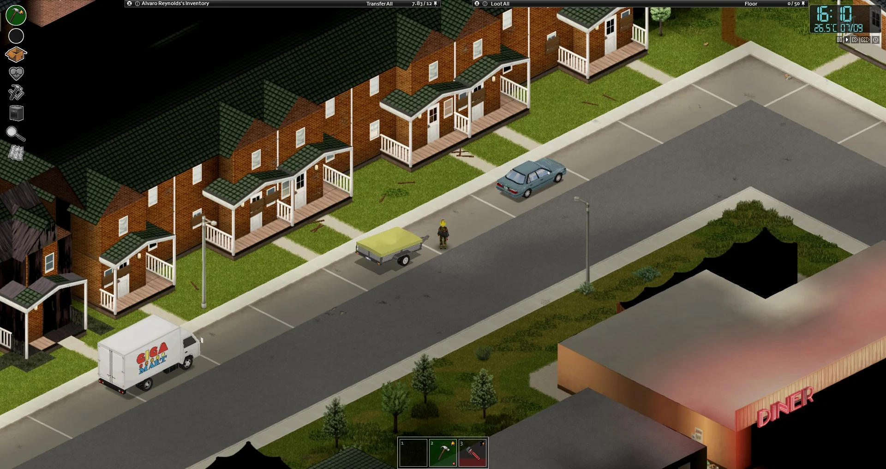
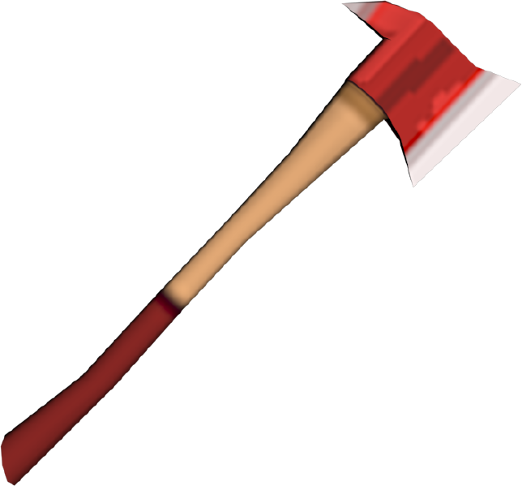
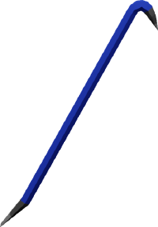
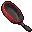
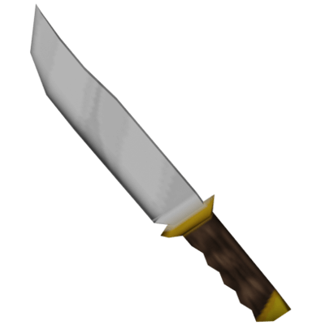
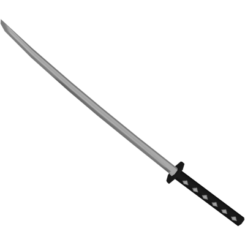
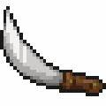
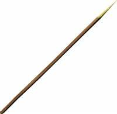

Conditions
Just like every other zombie game, you need food, and water but at the same time, you have three more conditions; temperature, board, and sadness.
Temperature: temperature is a realistic condition in the game. Your temperature drops when in a cold environment or you just wash yourself, rises when in summer or gets a fever.
Board: Your character gets bored when they don’t have anything to do or don’t see zombies for too long. If it gets too serious, your character gets upset and sad. You can stop being bored by reading books or watching TV.
Sadness: As your character gets too board, he will feel sad which makes you take stuff very slowly. Can be cured by eating anti-depressant.
map_events
In the game, there will be random events that happen on the map, car accidents and burning houses for example. The most common one is mapping events. Some zombies can spawn a noted map that probably noted their story or their stash where there is lots of loot.
Survivor house: this place is a fortified house usually with wood plank and there will be a survivor zombie inside.
Helicopter event: the worst nightmare for players, it is certain that a helicopter is there to watch you die by making noise around you.

Police roadblock: not really a common event, only appear on road, two or three police car will block the road, in rare cases, road barricade will appear. In a very rare case, there will also be corpses in front of it and police near the roadblock

Other unexpected events: random gun shots and screaming.
Weapons
In the game you can use whatever you can think of to fight back zombies frying pan and guitar. Here's a few different weapons in the game.
Axe
Fire axe:
Axe is considered as a tool but not a weapon, but fire axe is there to decorate your base.
Long blunt
Crowbar:
True legend, high damage, highest durability, easiest to find in the game.
Short blunt
Frying pan:
The legendary weapon, the very first weapon you will have of your gaming career, you can find it in any house or home.
Short blade
Hand axe:
Most people will use them as their secondary, because when power goes out, you have to grab a flashlight indoors. On the other hand, it will usually be baton or hand axe.
Hunting knife:
Only appear in camping stores and hunter’s shed. Works just same as kitchen knife but higher damage and better durability. All knives have a special feature, when you are behind a zombie without notice, you are able to poke it into its neck.
Long blade
Katana: Long blades are the rarest weapon in game, especially katana, you can only find them stuck on a zombie’s body. has the highest damage and moderate durability
Machete: Machete on the other hand, can’t be found on a zed, usually appear in a camping store or a random house. Damage is almost same high as katana but easier to find.
Spear
Spear is a unique weapon in the game, you can make them with wooden stick or plank and can stick all kinds of weapons on it, screwdriver and kitchen knife for example. When running with it, your character will be charging which has a very high damage. When you are dealing with one or two zeds, your character can poke through zed’s head but will make you immovable for one or two seconds when doing that.
